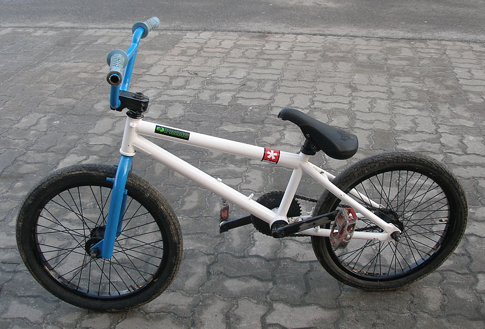
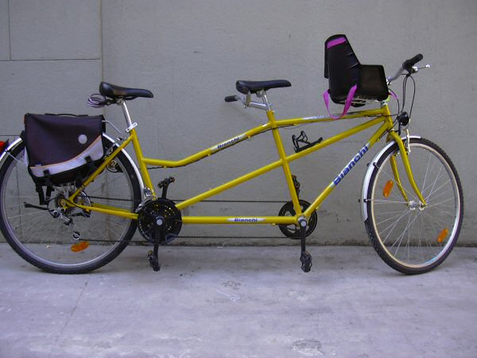

BMX
BMX (ang. bicycle motocross) – nazwa roweru i rodzaju kolarstwa, które zostało zapoczątkowane w USA w latach 70. XX wieku. Sport ten uprawia się na torach ziemnych ze sztucznie przygotowanymi przeszkodami, z użyciem rowerów na kołach 20-calowych lub 24-calowych (cruiser), posiadających wzmocnioną i bardzo uproszczoną (bez przerzutek) konstrukcję. Poza tym BMX-y mogą mieć dowolny typ konstrukcji, masę i geometrię. Istnieją również mistrzostwa świata i puchar świata BMX (UCI BMX Supercross).
Tandem
Tandem – rower przeznaczony dla dwóch lub więcej osób, siedzących w układzie jedna za drugą. Typowy tandem ma, tak samo jak rower jednoosobowy, jedną ramę i dwa koła, za to każda z osób ma własne: kierownicę, siodełko i pedały. Zdarzają się jednak także tandemy przeznaczone dla większej liczby osób. Udział w napędzaniu roweru mają obie osoby, natomiast kieruje rowerem zazwyczaj osoba z przodu, aczkolwiek spotykane są rowery specjalistyczne, np. dla osoby dorosłej z dzieckiem, lub dla osoby niepełnosprawnej z opiekunem, gdzie można przełączać kierowanie rowerem, lub też tylko tylna osoba ma taką możliwość. W każdym z tych przypadków osoba niekierująca wykorzystuje wtedy swoją kierownicę tylko jako oparcie dla rąk. W podobny sposób mogą być również rozłączane lub przełączane układy napędu i hamowania.
Rower miejski

Tradycyjny rower miejski, tak zwany holender, zbudowany jest najczęściej na kołach 28-calowych (choć spotyka się również rowery z kołami 26- i 27-calowymi), posiada giętą, szeroką kierownicę, krótką ramę i szerokie siodełko umożliwiające jazdę w pozycji wyprostowanej. Posiada on też zwykle lampki zasilane z dynama, komplet błotników, osłonę na łańcuch, nóżkę, bagażnik tylny, czasem osłonę tylnego koła czy koszyk.